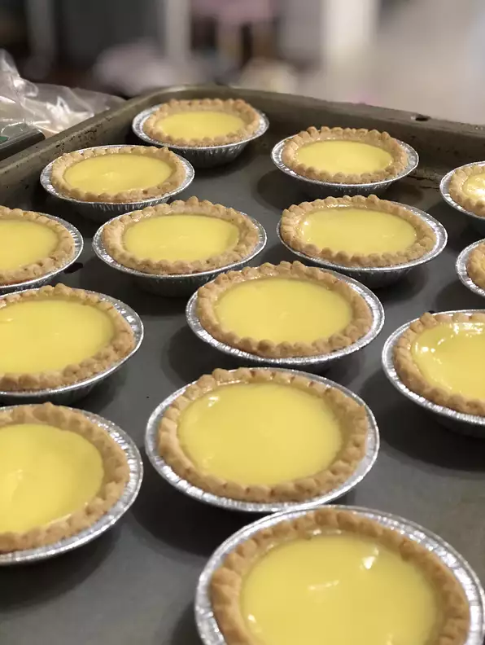

Easy Hong Kong Style Egg Tarts

Ingredients
- 1 ½ cups water
- ¾ cup white sugar
- 4 eggs
- ¼ cup evaporated milk
- 24 (3 inch) unbaked tart shells
Steps
- Preheat an oven to 425 degrees F (220 degrees C).
- Combine the water and white sugar in a saucepan, and bring to a boil.
Cook until the sugar is dissolved, remove from heat and cool to room temperature.
- Beat the eggs in a large bowl; add the evaporated milk and continue beating.
Pour in the cooled sugar water and mix until well combined.
Place the tart shells on a baking sheet.
Strain the filling through a sieve, and fill the tart shells.
- Bake in the preheated oven until the filling has puffed a little bit, about 20 minutes.
Odin Recipes